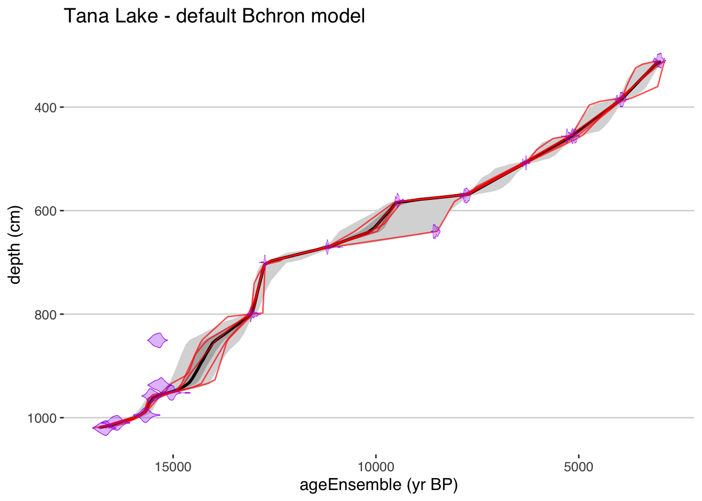
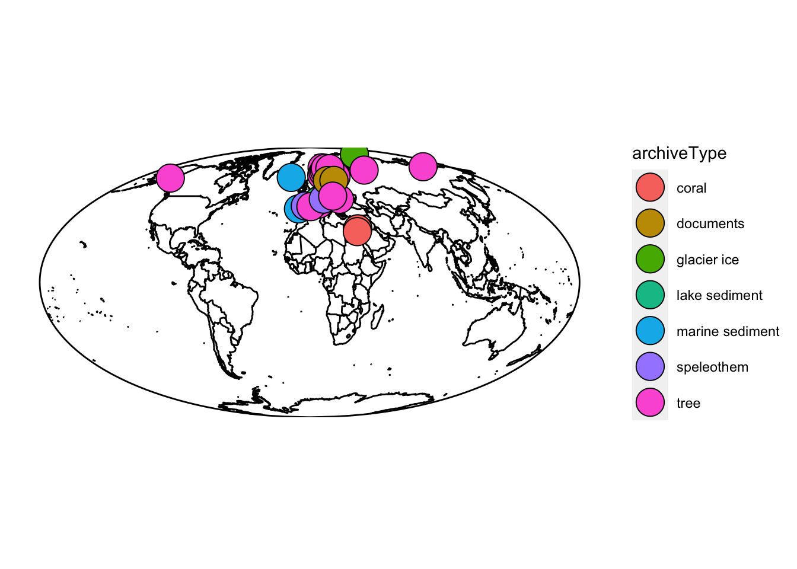
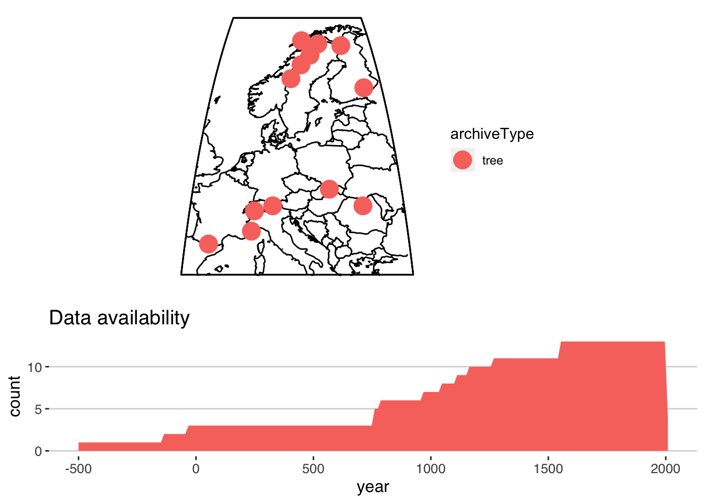

Chapter 3 Data in geoChronR
geoChronR was designed for data structured in the LiPD format. Actually, much of the LiPD framework was developed to accommodate the needs of geoChronR, so by far, you’ll find it easiest to work with data in the structured, metadata-rich LiPD format. All of the examples and exercises in this book will use LiPD datasets. If you have data you want to analyze in geoChronR, the best and easiest way to get those data into the LiPD format is at the LiPD playground. It takes some time to learn the structure, and some time to annotate your data, but it will save you time down the road. If you really don’t want to lipdify your data, we are working on ways to take advantage of geoChronR tools with simpler data structures. This will mean more work in geoChronR, since you’ll have to specify a lot information that would normally be included in a LiPD file, but there are times when this makes sense. Once this functionality is operable, we’ll add a module demonstrating how this works.
3.1 Loading a LiPD file
Now you can load the lipdR library, and load some data.
library(lipdR)
library(geoChronR)## Registered S3 method overwritten by 'spatstat.geom':
## method from
## print.boxx cli## Welcome to geoChronR version 1.0.14!## ##
## Attaching package: 'geoChronR'## The following objects are masked from 'package:lipdR':
##
## createTSid, pullTsVariableL <- readLipd("https://lipdverse.org/Temp12k/current_version/GEOFAR_KF16_MgCa.Repschlager.2016.lpd")## [1] "reading: GEOFAR_KF16_MgCa.Repschlager.2016.lpd"You can load a LiPD file from the web, as shown above, or locally on your computer. If you leave the input blank (e.g. L <- readLipd()), you can interactively choose a file on your computer.
Exercise 3.1 Explore the Temp12k collection on lipdverse.org, and load a file into R using lipdR with two different approaches: a) directly using the url as above, and b) download the file to your computer, and load it interactively.
Click for Answer to 3.1a
We’ll use this dataset.
- First we’ll get it directly from the web like this:
lipd <- readLipd("https://lipdverse.org/Temp12k/current_version/HeshangCave.Wang.2018.lpd")## [1] "reading: HeshangCave.Wang.2018.lpd"Click for Answer to 3.1b
- This time, just go to the dataset and download the data to your computer, then run
lipd <- readLipd()Once you have a LiPD object loaded in R, there are a few things you can do. First, if you want a quick and dirty visualization of what’s inside the dataset, use plotLipd().
If you know what the variables are you want to plot beforehand, you can specify them like this:
plotSummary(L,paleo.data.var = "temperature",chron.age.var = "age",chron.depth.var = "depthMid",chron.age.14c.var = NULL)## [1] "Found it! Moving on..."
## [1] "Found it! Moving on..."
## [1] "Found it! Moving on..."
## [1] "Found it! Moving on..."
## TableGrob (4 x 4) "arrange": 4 grobs
## z cells name grob
## 1 1 (1-1,1-2) arrange gTree[GRID.gTree.11]
## 2 2 (1-2,3-4) arrange gtable[layout]
## 3 3 (2-4,1-2) arrange gtable[layout]
## 4 4 (3-4,3-4) arrange gtable[layout]But most of the time, you’ll just run it in interactive mode and select what you want.
plotSummary(lipd)One of the components of plotSummary() is a site map, which is created with the function mapLipd().
Exercise 3.2 Check out the documentation for mapLipd() (type ?mapLipd), and tinker with the options to produce different types of maps.
3.1.1 Extract a variable from a LiPD object
In geoChronR, it is often useful to extract one or two variables from a LiPD object and then use them for subsequent analysis and visualization. The key function for this is selectData(). Typically, you’ll use it interactive mode to find the variable your looking for, either in the paleoData or chronData sections of the LiPD file.
#grab the calibrated temperature record
temp <- selectData(L,paleo.or.chron = "paleoData")
#grab the original dates from the chronData
c14 <- selectData(L,paleo.or.chron = "chronData")If there’s a lot of variables in the file, and you kinda know what you’re looking for, you can add a var.name guess and it will narrow it down to options that seem likely, or select one automatically if it’s close.
Exercise 3.2 Enter “d18o” as the var.name in selectData() and see how it narrows down your options.
Of course, you can also specify all of the options in selectData(), and then get exactly what you want non interactively. This includes data from model ensembleTables or summaryTables, in addition to the measurementTables you use more frequently. For example:
mgCa <- selectData(L,var.name = "mg/ca",paleo.or.chron = "paleoData",table.type = "meas",meas.table.num = 1)## [1] "Found it! Moving on..."3.2 Loading multiple LiPD datasets
In addition to loading single files, readLipd() can also load a whole directory, or a url that points to a zip file full of files.
eur <- readLipd("https://lipdverse.org/geoChronR-examples/euro/Euro2k.zip")## [1] "reading: Arc-AkademiiNaukIceCap.Opel.2013.lpd"
## [1] "reading: Arc-Forfjorddalen.McCarroll.2013.lpd"
## [1] "reading: Arc-GulfofAlaska.Wilson.2014.lpd"
## [1] "reading: Arc-Indigirka.Hughes.1999.lpd"
## [1] "reading: Arc-Jamtland.Wilson.2016.lpd"
## [1] "reading: Arc-Kittelfjall.Bjorklund.2012.lpd"
## [1] "reading: Arc-PolarUrals.Wilson.2015.lpd"
## [1] "reading: Arc-Tjeggelvas.Bjorklund.2012.lpd"
## [1] "reading: Arc-Tornetrask.Melvin.2012.lpd"
## [1] "reading: Eur-CentralandEasternPyrenees.Pla.2004.lpd"
## [1] "reading: Eur-CentralEurope.Dobrovoln.2009.lpd"
## [1] "reading: Eur-CoastofPortugal.Abrantes.2011.lpd"
## [1] "reading: Eur-EasternCarpathianMountains.Popa.2008.lpd"
## [1] "reading: Eur-EuropeanAlps.Bntgen.2011.lpd"
## [1] "reading: Eur-FinnishLakelands.Helama.2014.lpd"
## [1] "reading: Eur-LakeSilvaplana.Larocque-Tobler.2010.lpd"
## [1] "reading: Eur-LakeSilvaplana.Trachsel.2010.lpd"
## [1] "reading: Eur-Ltschental.Bntgen.2006.lpd"
## [1] "reading: Eur-MaritimeFrenchAlps.Bntgen.2012.lpd"
## [1] "reading: Eur-NorthernScandinavia.Esper.2012.lpd"
## [1] "reading: Eur-NorthernSpain.Martn-Chivelet.2011.lpd"
## [1] "reading: Eur-RAPiD-17-5P.Moffa-Sanchez.2014.lpd"
## [1] "reading: Eur-Seebergsee.Larocque-Tobler.2012.lpd"
## [1] "reading: Eur-SpanishPyrenees.Dorado-Linan.2012.lpd"
## [1] "reading: Eur-SpannagelCave.Mangini.2005.lpd"
## [1] "reading: Eur-Stockholm.Leijonhufvud.2009.lpd"
## [1] "reading: Eur-Tallinn.Tarand.2001.lpd"
## [1] "reading: Eur-TatraMountains.Bntgen.2013.lpd"
## [1] "reading: Ocn-AqabaJordanAQ18.Heiss.1999.lpd"
## [1] "reading: Ocn-AqabaJordanAQ19.Heiss.1999.lpd"
## [1] "reading: Ocn-RedSea.Felis.2000.lpd"If you load multiple files, it will create an object called a “multi-lipd,” which is just a list of lipd objects. And we can use some of the same functions.
For example, let’s make a map of our multi-lipd object:
mapLipd(eur,projection = "mollweide",global = TRUE) These multi-lipd objects are convenient for getting a lot of data into R, but trying to work with the data inside can get pretty tricky pretty fast. When working with multiple datasets, you’ll almost always want to create a timeseries (TS) object, or formally a “lipd-ts” object. You can do that using the ‘extractTs()’ function or ’as.lipdTs()` from the lipdR package.
TS <- extractTs(eur)
TS <- as.lipdTs(eur)The LiPD-TS object is a “flattened” version of the dataset, it’s much less hierarchical and each entry corresponds to a column in a table. By default, extractTs() will get all the variables in measurementTables in paleoData objects, but you can also get variables from other tables and from the chronData objects by changing the options. See ?extractTs for details.
Now we can use the TS version of plotSummary to summarize the whole collection of data.
summ <- plotSummaryTs(TS,age.var = "year") :::: {.blackbox data-latex=""}
::: {.exercise #plotSummaryTs}
Explore the options in plotSummary. Create a new version that colors the dots and availability plot by PAGES 2k Region (the variable name is geo_pages2kRegion)
:::
::::
:::: {.blackbox data-latex=""}
::: {.exercise #plotSummaryTs}
Explore the options in plotSummary. Create a new version that colors the dots and availability plot by PAGES 2k Region (the variable name is geo_pages2kRegion)
:::
::::
Although LiPD-TS objects are more convenient to work with, they’re still list-based and difficult to explore visually. If you’re used to working in the tidyverse framework, you’ll likely find it useful to convert the data into a tibble (a type of data.frame). In lipdR, this is a “lipd-ts-tibble” object, but it’s also just a tibble, so it unlocks many, many options in RStudio and tidyverse.
To do so, use the ts2tibble() or as.lipdTsTibble() functions to create tibble.
ts.tib <- ts2tibble(TS)If you’re in RStudio, you can now explore the contents of the object grapically. This produces a large tibble, so it’s still a little unwieldy. Importantly, some of the columns are nested (depth, age, year, paleoData_values), so all of the timeseries data are included in each row, for each timeseries. You can learn more about nested tibbles here.
As the tidyverse has grown, we’ve increasingly moved our lipdR and geoChronR workflows into this model. Take a look at how this unlocks some pretty efficient workflows.
3.2.0.1 Filtering
It’s often the case that the a collection of LiPD files includes far more data than we actually need. Let’s use dplyr to get just the data we need. Let’s say that we only want variables that are European tree ring data that were used in Pages2k. You can explore the variables in the data.frame, and the values in each field, and then compose an expression:
library(dplyr)##
## Attaching package: 'dplyr'## The following objects are masked from 'package:stats':
##
## filter, lag## The following objects are masked from 'package:base':
##
## intersect, setdiff, setequal, unionfiltered.tib <- ts.tib %>%
filter(between(geo_latitude,30,80) & between(geo_longitude,-30,60)) %>% #restrict the coordinates to just Europe
filter(archiveType == "tree") %>%
filter(paleoData_useInGlobalTemperatureAnalysis == TRUE)Let’s take a look at the result!
nTS <- as.lipdTs(filtered.tib) #convert it back (for now)
plotSummaryTs(nTS,age.var = "year",f = .1)
## TableGrob (5 x 3) "arrange": 2 grobs
## z cells name grob
## 1 1 (1-3,1-3) arrange gtable[layout]
## 2 2 (4-5,1-3) arrange gtable[layout]Great, it looks like our filtering worked! It looks like most of the data go back about 1000 years, but a few records are much longer. Next, we’d like to restrict our analysis to just 1000 - 2000 AD. This is possible in a nested tibble, but it’s often useful to have a longer version, one where every row in the data.frame corresponds to a single year-value pair, rather than a whole timeseries. This is the purpose of lipd-ts-tibble-long objects, the final lipd object type. This is useful if you want easy access to all the data in one large tibble.
We can convert our data to this structure using tidyTs() or, you guessed it, as.lipdTsTibbleLong()
longTib <- as.lipdTsTibbleLong(filtered.tib) %>%
dplyr::filter(between(year,1000,2000))## creating a lipdTsTibbleLong using year as the age.varTake a look at our new tibble, we restricted the time range, but it still has 11,350 rows! As you can imagine, loading in a few hundred LiPD datasets and converting them into lipd-ts-tibble-long objects will result in tibbles of several million rows, which might cause your computer problems!
Let’s take a quick look at these filtered data. The plotTimeseriesStack() function lets you make a quick version of the classic paleoclimate stack plots. Check out this tutorial for a deep dive.
Here we’ll just plot our data, and color it by the proxy type.
plotTimeseriesStack(longTib,color.var = "paleoData_proxy")
And there it is! Not too bad, but I don’t love that default colorscheme with only 3 values.
Exercise 3.3 Explore the options in plotTimeseriesStack. Create a new version that:
- Has better colors!
- Changes the line thickness.
- What does invert.var do?
- Replot this, but only showing the MXD data.